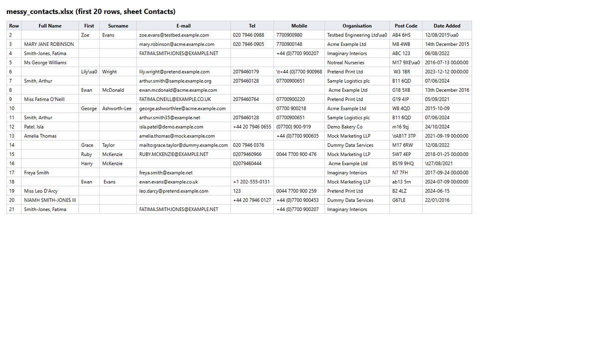
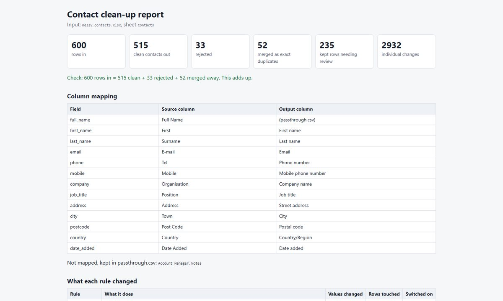
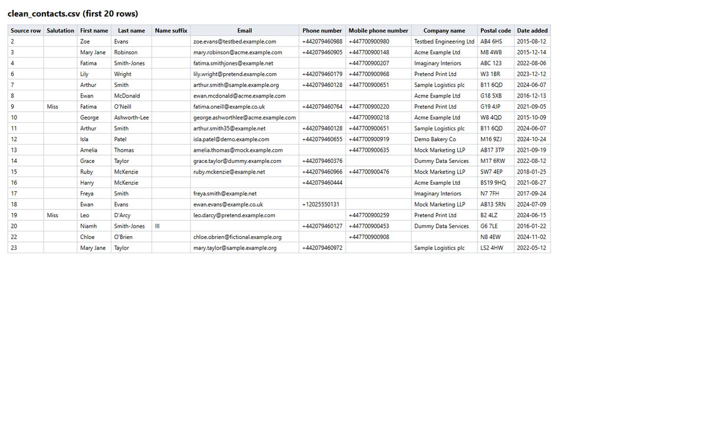

The problem
A business has a contact spreadsheet built up over years, with names in capitals, phone numbers in ten formats and the same people listed several times. Its CRM import rejects the file or fills the CRM with junk.
What it does
- Guesses which column is which and lets a mapping file correct it
- Fixes names, splits full names, and formats emails, UK phone numbers, dates and postcodes
- Merges exact duplicates and flags likely ones for a person to decide
- Sets aside rows with no way to contact anyone, with the reason
- Writes a one-page report counting every change, with examples
- Traces every output row back to its original row number
See the sample output
This is the real report the tool produced from the sample run.
Compare the two files yourself:
The sample run in figures
- rows in the messy file
- 600
- clean contacts out
- 515
- rows set aside with a reason
- 33
- exact duplicates merged
- 52
- kept rows flagged for a person to check
- 235
- individual changes, each one counted
- 2932
Screenshots



How to run it
pip install -r requirements.txt && pip install -e .python demo/run_demo.pycontact-cleaner clean contacts.xlsx --out cleanedFull instructions are in the project’s README.
Tools used
- Python 3.11
- openpyxl
- phonenumbers
- PyYAML
- pytest
- Playwright (screenshots only)
Honest limits
- UK-first. Name rules suit British and Irish names; other naming customs (family name first, single names, patronymics) are not split well and should be checked.
- Postcodes are checked for format only, and only for UK rows.
- Phone numbers are checked against number plans, not that they are in service. An extension is dropped, not moved to another field.
- Unreadable dates and invalid postcodes stay in the clean file as they were (and are flagged), so read review.csv before importing.
- A column headed just "Name" is read as a person's full name; the tool prints a note and the report repeats it. If it holds company names, map it with
columns: {company: Name}. If two columns look like email, the first is used and the other goes to passthrough.csv. - Likely duplicates need the same name and company. Nicknames (Bob and Robert) and typos in names are not matched.
- Exact duplicates are matched on email only. Two rows with the same phone number and different emails are not merged.
- Only one date column (Date added) is cleaned. Other date columns go to passthrough unchanged.
- It does not upload anything to a CRM, check emails can receive mail, or look up missing data.
- Files are read into memory. A hundred thousand rows is fine; millions are not what it is for.
View the source for this project
All data in this sample is fictional.